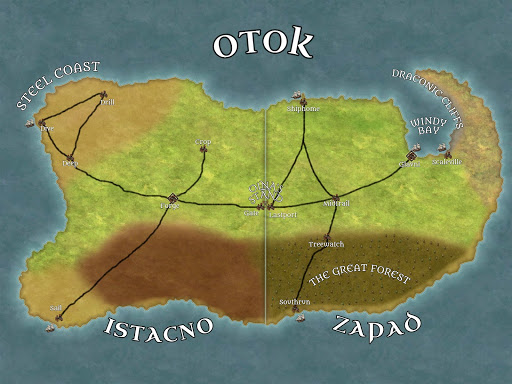

The Tales of Otok
Dungeons and Dragons Campaign Fall 2020
Overview
Demographics - Long before the age of Warlords, Otok was known as a good place for a fresh start, and a place of acceptance, and thus, is incredibly diverse. However, the two largest majorities are Gnomes (the original inhabitants of Otok) and Dwarves (as were very attracted to the new technologies). Many Deities are worshipped across the island as well, with the most common being Gond, the Lord of all Smiths. Also widely worshiped are Garl Glittergold, patron of Gnomes, Morodin, patron of Dwarves, and Silvanus, the Forrest Father. Followers of Silvanus generally wish to return Otok to a time before the Dawn of Steam, when the forests grew wildly, and are mostly nonviolent.
Map
Istacno Cities
- Forge - The Capital of Istacno, right in the center of the country. Largest city in Istacno by far. Full of huge factories and tall buildings.
- Crop - The agricultural center of Istacno, almost all of the nation’s food comes from here.
- Gate - The last city before crossing into Zapad, more or less just a fort at this point.
- Sail - A large port city, the main entrance point for ships from other countries.
- Tri Cities - Dive, Deep, and Drill and three nearly identical mining cities along the steel coast of Istacno. 80 percent of Istacno’s metal comes from these three cities.
Zapad Cities
- Glavni - The Capital of Zapad, a busy and bustling city along the shores of Windy Bay.
- Shiphome - The northern port city of Zapad.
- Southrun - The southern port city of Zapad.
- Midtrail - A center of many highways, Midtrail is home to many Inns and other traveling services.
- Lastport - The last city before crossing into Istacno. Currently filled with a great deal of security.
- Scaleville - A smaller city on the Windy Bay, home to a great many Dragonborn. Scaleville marks the boundary between the Dragon Sanctuary and the rest of Zapad.
- Treewatch - A very green city along the edge of the Great Forest. Home to the College of Natural Studies and the Temple of Silvanus.
Known History
Centuries ago, when the Island of Otok was whole, there was peace across the land. Each village mostly kept to itself, though travelers, traders, and merchants were welcomed throughout. Of course, disputes arose from time to time, generally being settled by the local lord with the most impressive personal army. And for a good long time, this was the way things went, and for a good long time, this worked. But as history has shown the world time and time again, all good things must come to an end.
Around 200 years ago, a new era of technology sprang to life: The Dawn of Steam. With the invention of the Steam Engine, new tools emerged to support and improve the lives of the people of Otok. And as new tools are built, so are weapons. Massive warring vehicles were constructed to crush anyone who opposed you, automatons were created to mindlessly slay those who stood in your way, and towering fortresses were erected to keep you safe from the madness outside. Before long, if you had not pledged yourself to serving a warlord, you were sure to be slaughtered in the crossfire.
A gnome by the name of Orla Golub had enough of the destruction of her home island. She applied herself and learned all there was to know about these new technologies, and she built a forty foot tall automaton called the Ark of Justice. The Ark was humanoid in appearance, with each arm being weapons of ungodly destruction. She set out with her automatron to bring the gears of war that terrorized her homeland to a screeching halt. She marched across the island, taking down local warlords one by one, demolishing their compounds and wrecking their constructs. Before long, only two warlords remained: Snositi of the North and Lav of the South. Though bitter enemies, Snositi and Lav understood the reckoning that awaited them. They decided to join forces to destroy The Ark. They caught it at the center of the island, with one army approaching from the north, and one from the south.
Orla Golub saw an opportunity to bring the bloodshed to a quick end, and decided to unleash the full, unrestricted power of the Ark of Justice. She commanded her automaton to aim one arm north, and one arm south, and to unleash a blast the likes of which the world had never seen. The blasts shot North and South, nearly annihilating both armies, and cutting the island in half except for the ground it stood on. The blast proved too powerful for the Ark to withstand, and it crumpled. Few survived this catastrophic event, but those who did managed to steal away with the arms of the Ark, though the Heart that powered them was never found. Most assume that it was destroyed by unleashing such power, while others believe Orla Golub knew that she must keep this power from the world, and she took it and hid it away. Either way, Orla was never seen again.
Orla wished to bring peace back to her home. However, her actions were so extreme that the island was literally divided. Two countries arose from the ashes of this campaign, one on the East, Istacno, and one on the West, Zapad.
Though Orla Golub had destroyed every physical representation of the Warlord era, the ideologies lived on. As Otok was being rebuilt and re-established, these warlord idealists were overall shunned from the rest of society. An overwhelming amount of the population agreed that the past systems of Warlords constantly fighting for dominance and control was not beneficial to anyone but the Warlords themselves. Now, as the Warlords had been destroyed, the common people were able to rise and shape Otok as they saw fit. However, as Warlord Idealists were shunned from place to place, they eventually banded together and consolidated what power they still possessed.
In establishing new systems of rule, the people found Otok to be too large to easily work together, and thus, two new countries were formed: Zapad (east) and Istacno (west) of the Union of Otok. The countries elected leaders and began to develop, supporting each other in whatever ways they could. Soon after the first election, the High Ministers of both countries met at Orla’s Stand, the bit of land that connects both countries, to embrace one another in a sign of unity. This was established as a new holiday called Zagrliti. Each year forward on Zagrliti the High Ministers of each country would meet at Orla’s Stand and share the traditional Embrace of Unity.
In the 150th year of the union, trouble was brewing within Istacno. A movement of Warlord Idealists known as the Warbears was growing rapidly in size. Istacno had elected a new High Minister, Medved the Red, a dwarf who had sworn to stomp out the Warbears and they’re destructive ways. However, soon after his election, Medved had a change of heart, and decided that the way of Istacno and the Union of Otok was not to oppose, but to accept. He now pledged to mend the divide between the country and the Warbears, and find peace, and began to praise some of the Warbear’s actions and uplifted them as outstanding patriots.
On the 151st Zagrliti, Medved the Red met with Nissa Turen, the High Minister of Zapad, at Orla’s Stand for the Embrace of Unity. Post embrace, Medved proposed his idea for a Museum to showcase artifacts and relics from the Warlord Era in Forge, the capital of Istacno. He suggested that Zapad bring them the Arm of the Ark that they possessed, so that they could display the two arms together. Turen was concerned by this, and expressed her belief that this was widely unsafe. Medved quickly became angry, and the two argued extensively. As Turen gave her final “no” and turned to walk away, Medved drew a handaxe and drove it into Turen’s back, killing her.
This was the turning point between the two nations. Fueled by his desire to possess both Arms of the Ark, he attempted to change Istacno into a nation of Warlords once more. He now works in endless pursuit of the Heart of the Ark, in attempts to power the Arm he does have so that he may claim the other.
Istacno now exists in a state of turmoil, full of Warbears trying to return the state to the old ways, as well as rebels, fighting to restore justice and peace. Zapad still ultimately remains peaceful, though the worries of war are prevalent. The border between the two nations is heavily guarded.